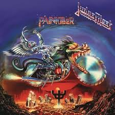
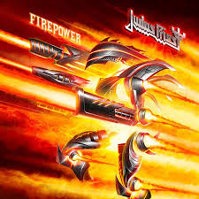

Discografía
Estos son algunos de los álbumes más representativos de esta banda, con enlace directo a YouTube para escuchar el disco completo.
Álbumes Destacados

British Steel (1980)
Un clásico del heavy metal con temas como “Breaking the Law” y “Living After Midnight”.
Escuchar en YouTube

Painkiller (1990)
Un álbum icónico que incluye clásicos como “Painkiller” y “Hell Patrol”.
Escuchar en YouTube

Firepower (2018)
Un álbum que combina la potencia del metal clásico con una producción moderna.
Escuchar en YouTube